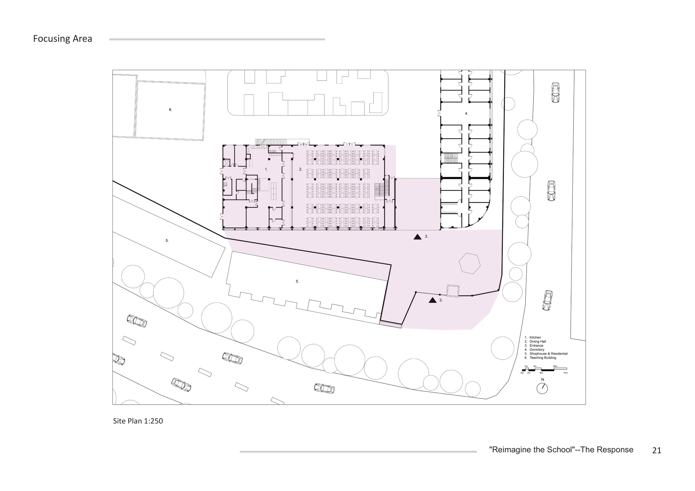
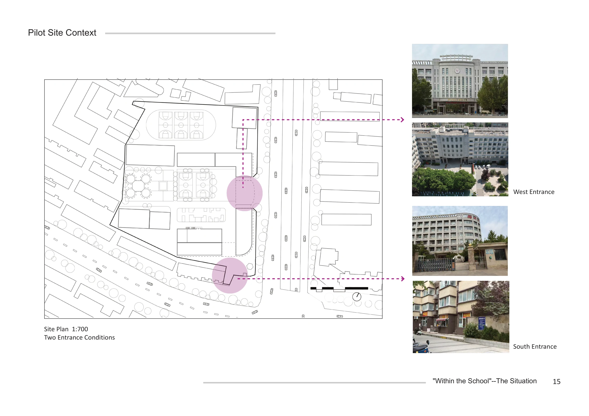
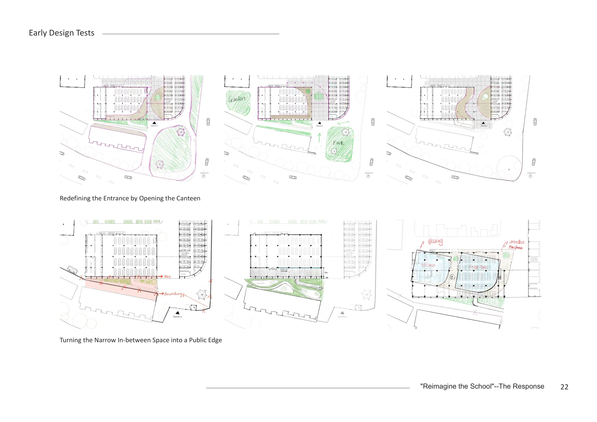
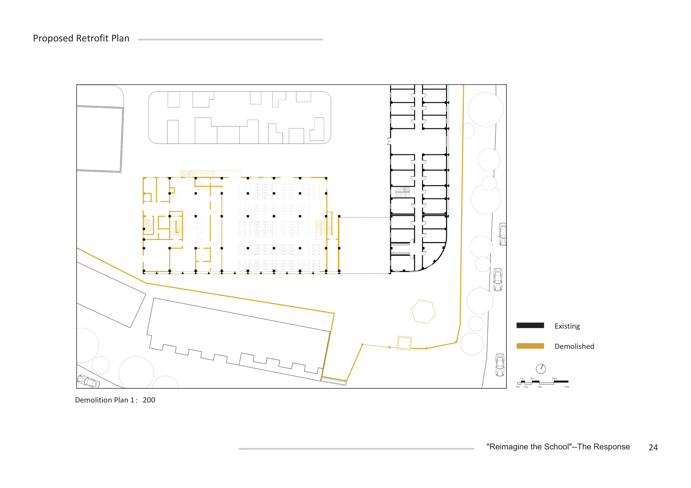
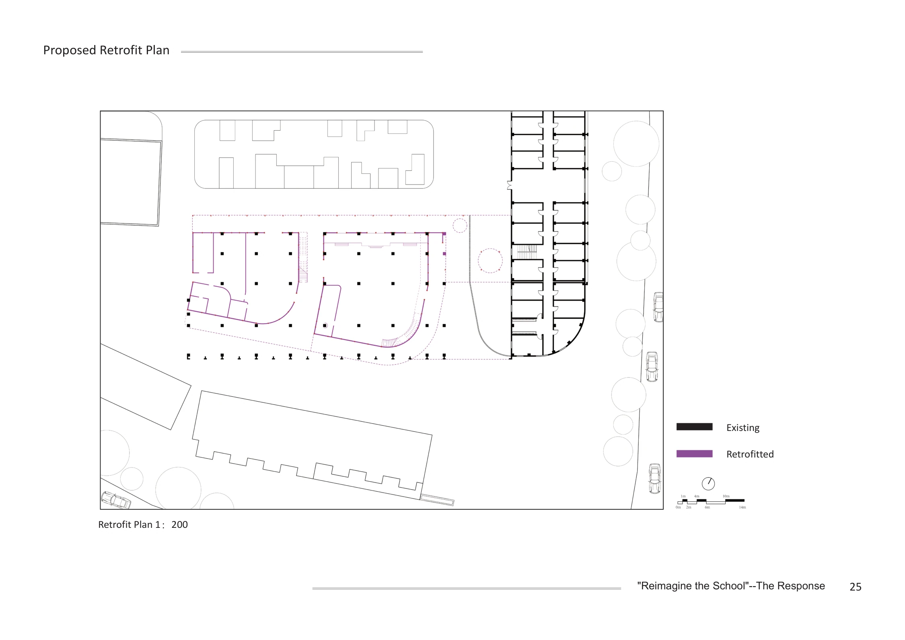
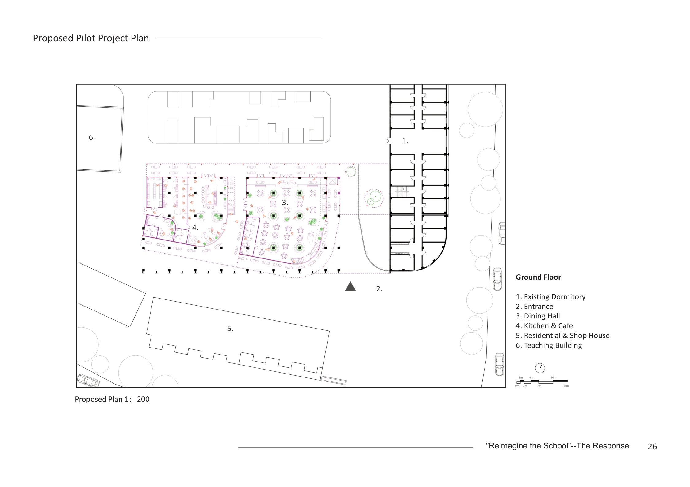
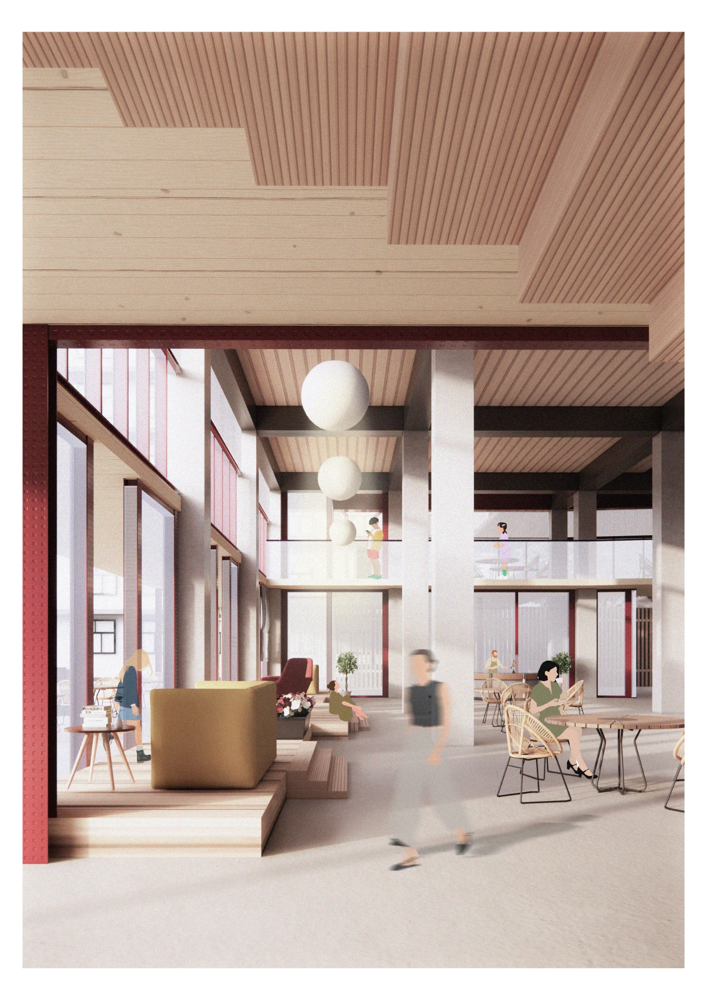
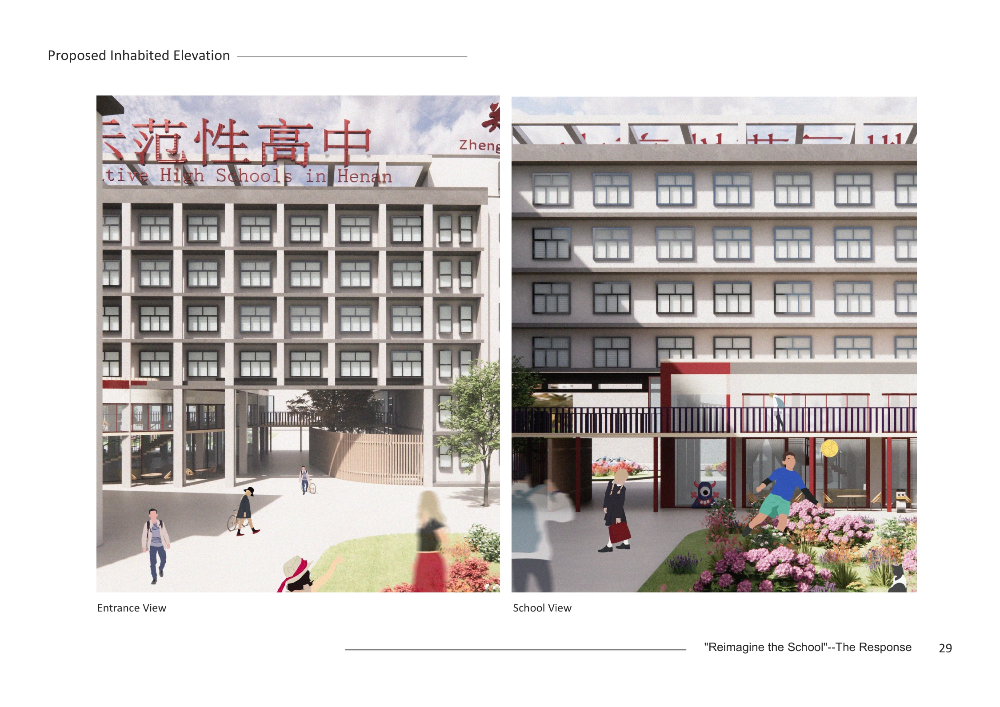

Ongoing MArch Studio · Research-informed design
Deinstitutionalising the School
Ground-floor retrofit and the informal school–city edge in Zhengzhou, China
Developed alongside my MArch dissertation, this ongoing studio project works with the same pilot school in Zhengzhou. Research into students’ informal use of entrances, corridors and outdoor spaces informs the design exploration of its southern entrance, ground floor and street edge.
The shared pilot site
The dissertation examines how informal spaces are experienced and used. The studio explores the architectural possibilities of the same site. The selected area is the southern entrance, where the school meets surrounding shops, housing and the street.




From initial tests to the proposed plan
Early design tests explore how to open the entrance and connect the ground floor with the street. The plans then record the proposed demolition and new walls, followed by the developed ground-floor arrangement.








Existing condition and proposed retrofit


Selected spatial perspectives



